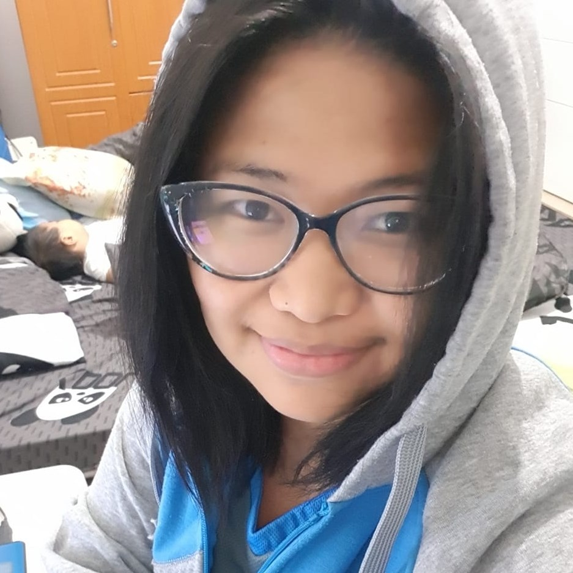

Marissa Ediza Oliva

Web Developer
Hello!! I am a freelance website
designer and developer based in Pampanga
Philippines. Throughout my career, I have honed my capabilities in project acquisition, time management, team collaboration, and effective client communication.
Education
Bachelor Of Science in Computer Science
2003 - 2007 | STI College
San Fernando, Pampanga, Philippines
Work Experiences
Niche Website Builders
Content Uploader 2020 - 2023
- Post content on various websites, based on
client direction and scheduling
- Maintain and develop the client’s website
Freelance Wordpress Development
Wordpress Designed and Development 2019 - 2023
- Designed and developed a WordPress
Websites for more than 10 clients
TPG Telecoms
NOC Support 2018 - 2011
- Responsible in managing and monitoring
Data Centers
- Communicated effectively with teams to
ensure high quality and timely manner of
customer requests
Telstra
Technical Support 2011-2009
- Provided excellent customer service and
technical support skills to the residential
customers of Telstra
Skills
- Wordpress ⭐ ⭐ ⭐ ⭐ ⭐
- Search Engine Optimization ⭐ ⭐ ⭐ ⭐
- E-Commerce ⭐ ⭐ ⭐ ⭐
- Photoshop ⭐ ⭐ ⭐
- Canva ⭐ ⭐ ⭐ ⭐ ⭐
- Customer Service ⭐ ⭐ ⭐ ⭐
Certification
Other
Hobby or Interest
Contact